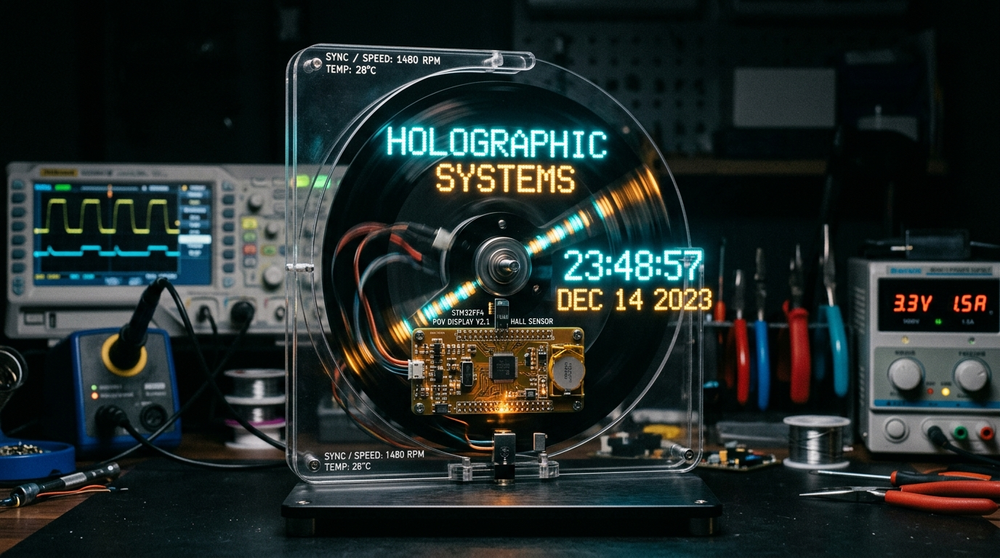

High-Speed POV (Persistence of Vision) Display
단독 하드웨어 설계 & 펌웨어 최적화 리드
⚡ Verified Engineering Metrics (정량적 성과)
- 홀센서 인터럽트 제어로 RPM 측정 오차 ±1% 이내 달성: 모터 회전 속도 변화에 실시간으로 적응하여 1480~1800 RPM 구간에서 그래픽 왜곡 없는 동기화 구현.
- microsecond 단위 타이밍 제어로 60 FPS 수준 정밀 잔상 구현: 10µs 단위의 하드웨어 타이머 인터럽트를 통해 잔상 번짐(Jitter)을 제거하고 선명한 공중 홀로그램 디스플레이 완성.
- 기계 조립 및 회로 레이아웃 직접 설계: 회전 시 원심력과 진동을 견딜 수 있도록 무게 중심을 고려한 양면 PCB 레이아웃 및 견고한 아크릴 프레임 직접 제작.
RPM Precision
±1.0% Error
Visual Refresh
60 FPS Eqv.
Interrupt Clock
10 µs ISR